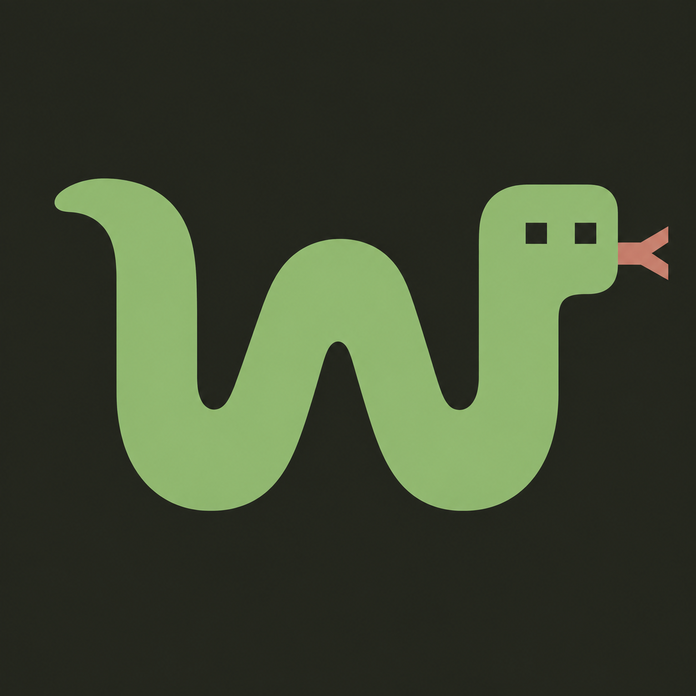
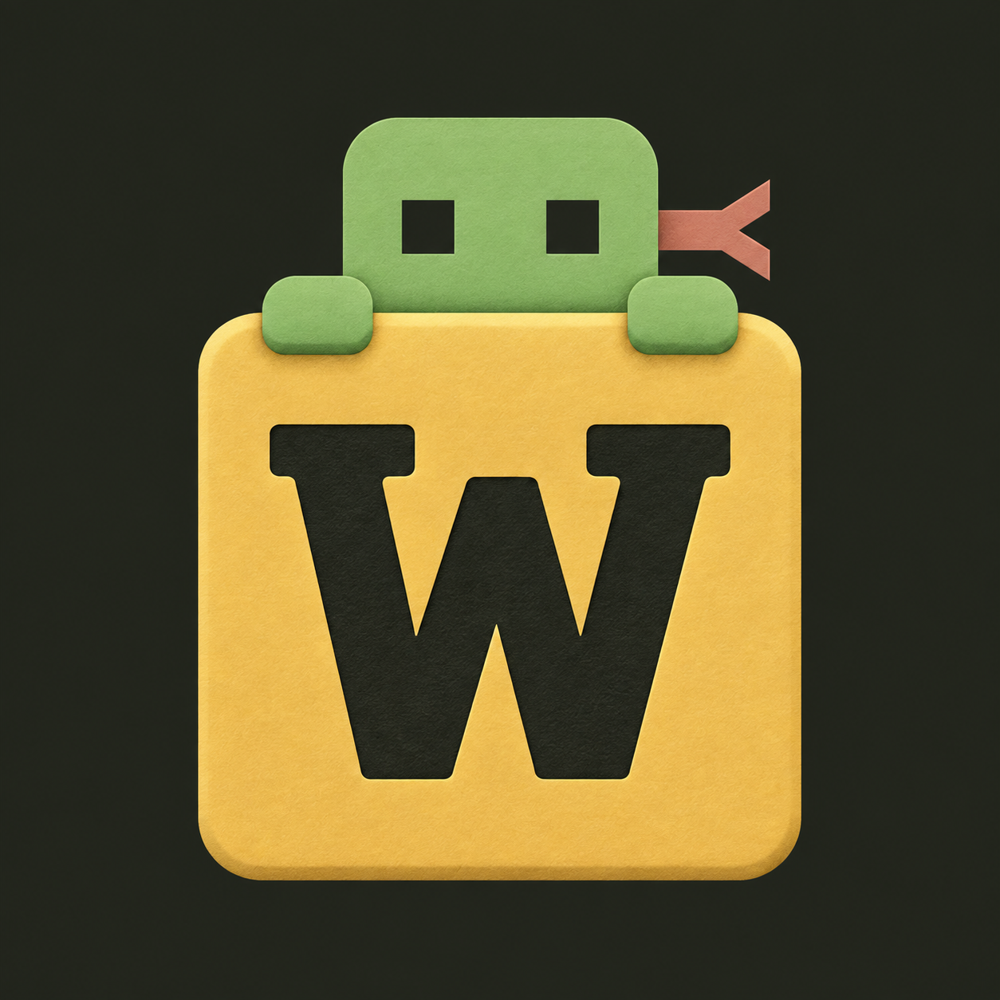
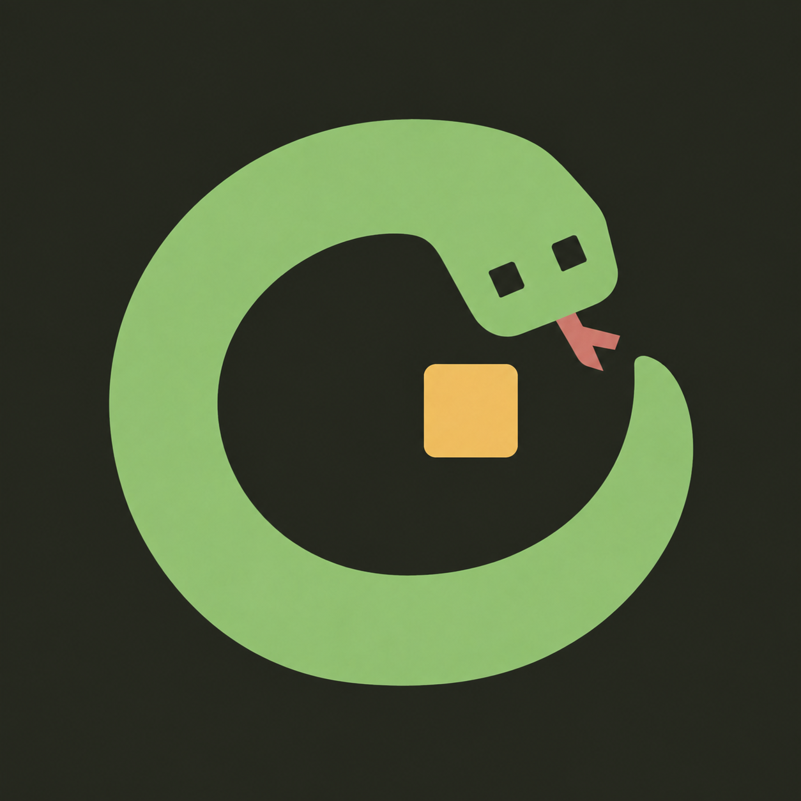
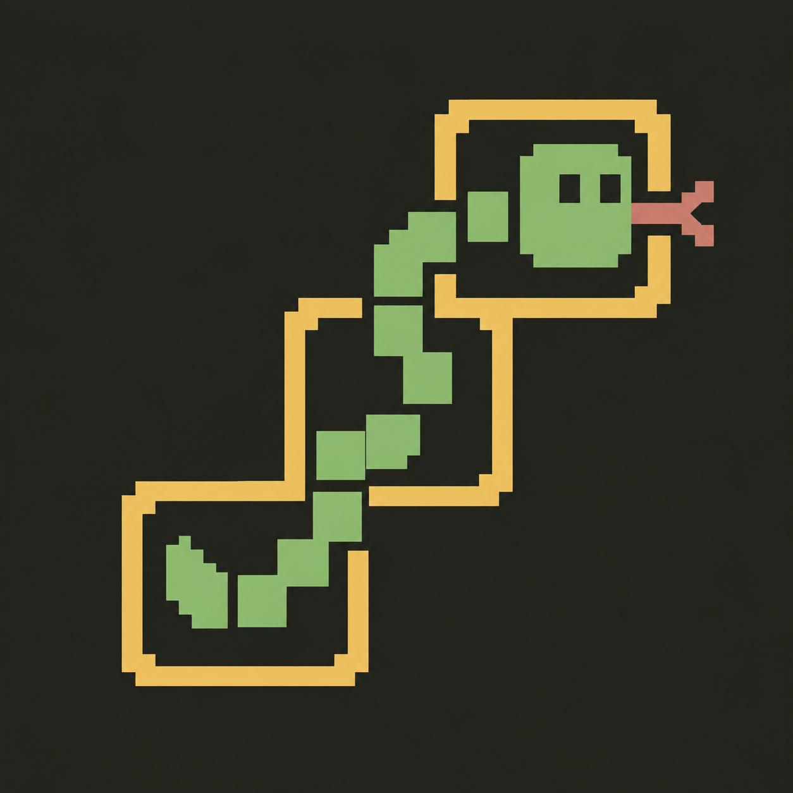
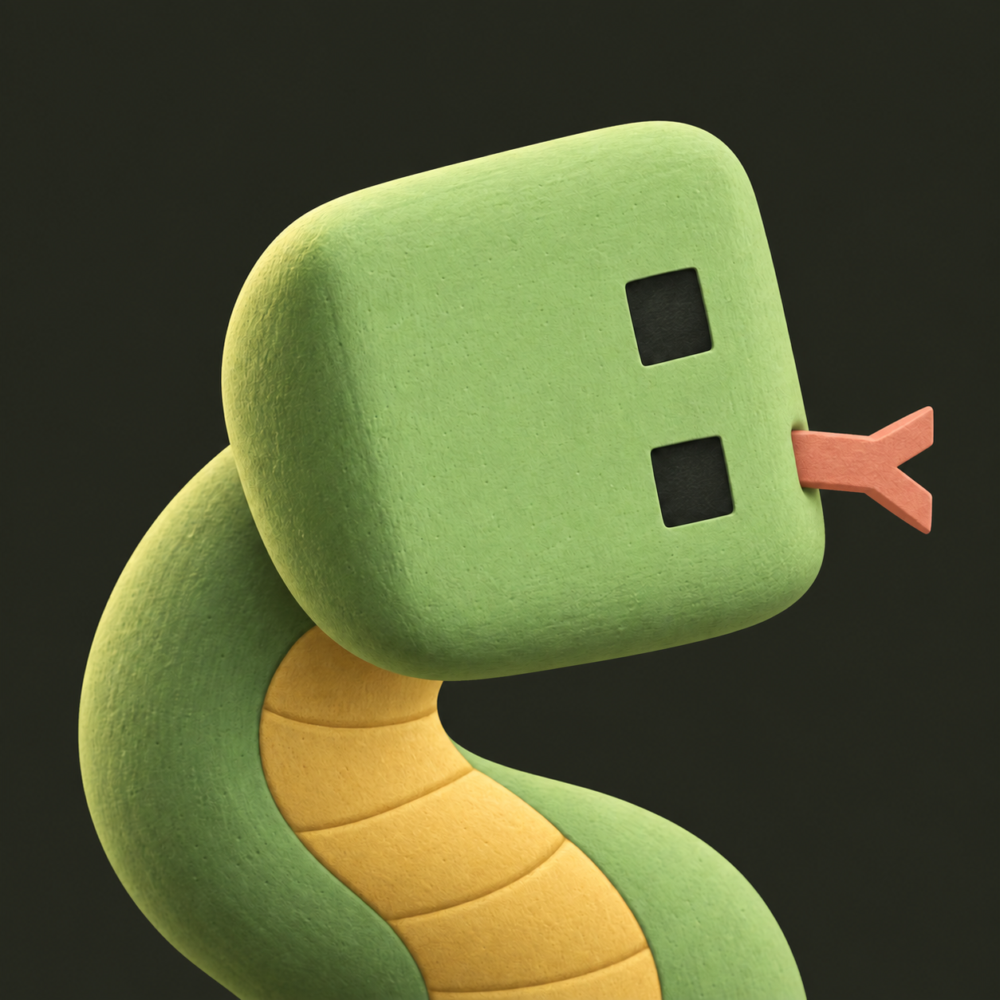

01
Wyrm W
The mascot becomes the initial. Simple and distinctive.
Download full-size PNG ↗WYRMLE
One palette, five personalities. Exploring the wyrm, the word tiles and the rhythm of a daily puzzle.

The mascot becomes the initial. Simple and distinctive.
Download full-size PNG ↗
Makes the word-game connection immediate.
Download full-size PNG ↗
A compact emblem with a daily-cycle feel.
Download full-size PNG ↗
Closest to the game’s retro tile language.
Download full-size PNG ↗
A softer character with more personality.
Download full-size PNG ↗60-pixel previews